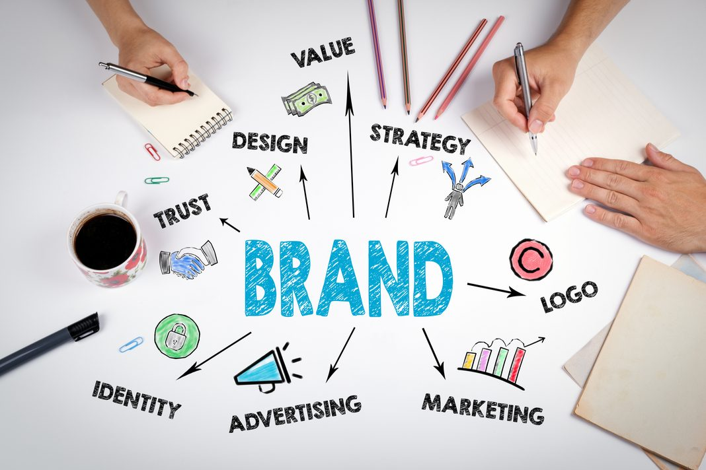
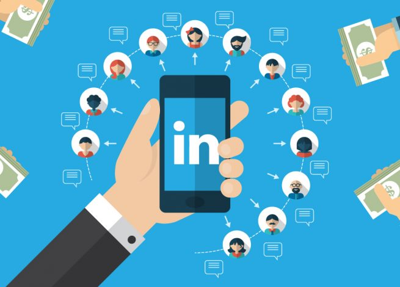
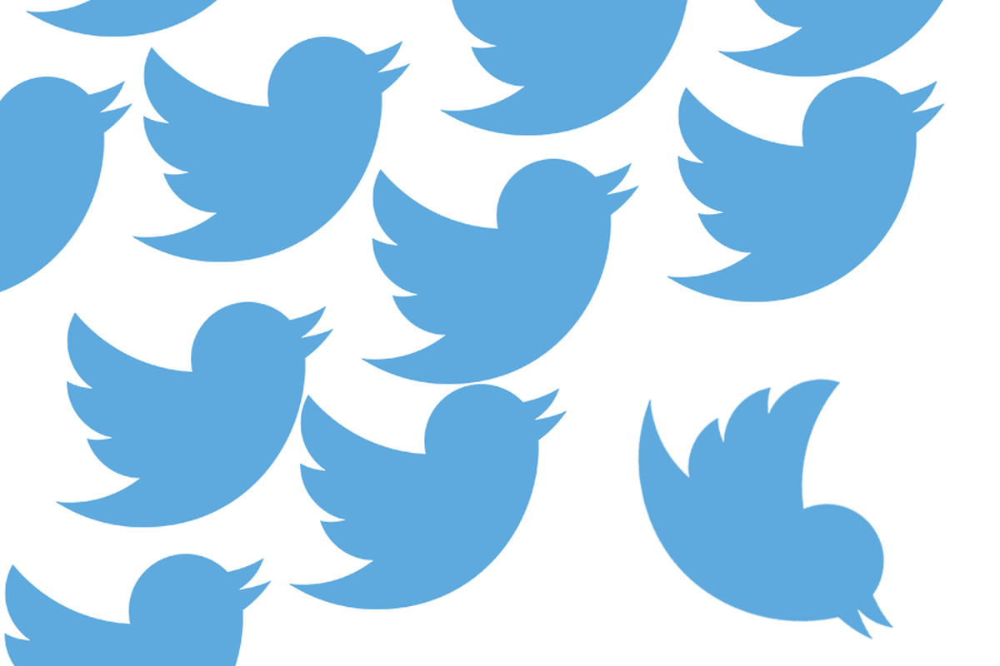

If I want to get a quick idea who someone “is” in academia, I check their Google Scholar page.
I deleted all my accounts on those sites since I don’t like/trust the companies owning the sites and want to control my web presence myself.
Research impact challenge, also see this pdf book. It’s a bit outdated and recommends things I’m not too fond of (e.g. Academia.edu/ResearchGate), but has still some nice information.